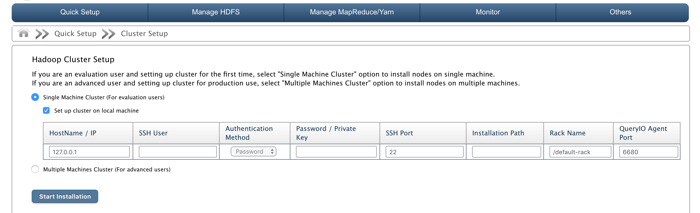
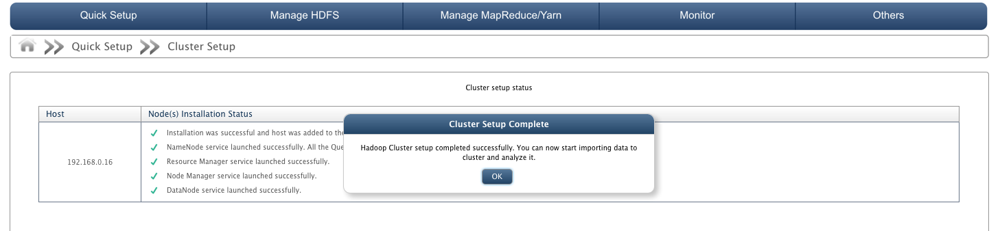
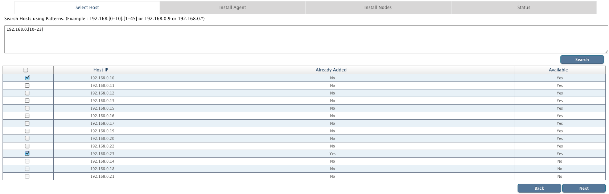
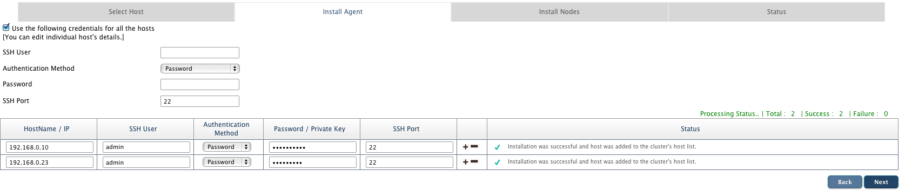
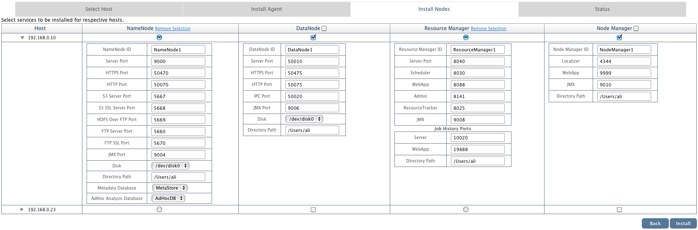
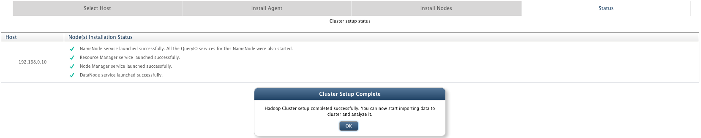

Cluster Setup
In this chapter
This chapter explains automated cluster setup process.
Introduction
A cluster consists of a set of connected
computers that work together so that in many respects they can be viewed as a single system.
Installing a Hadoop cluster typically involves unpacking the software on all the machines in the cluster.
Typically one machine in the cluster is designated as the NameNode and another machine as the ResourceManager, exclusively.
These are the masters. The rest of the machines in the cluster act as both DataNode and NodeManager. These are the slaves.
Cluster setup might be a time consuming task if you want to add large number of nodes on different machines.
To ease the task, QueryIO provides automated cluster setup.
First screen that appears on QueryIO server when no host is present is Cluster Setup through which you can directly configure your entire cluster.
To configure the cluster, go to Admin > Cluster Setup.
QueryIO provides two types of cluster setup:
- Single Machine Cluster (For evaluation users)
- Multiple Machines Cluster (For advanced users)

Single Machine Cluster (For evaluation users)
If you are not a professional user and just want to evaluate the product, you might want to go for single machine cluster setup.
This setup installs all required nodes on a single machine.
Just provide machine's credentials and QueryIO will install a NameNode, DataNode, ResourceManger and a NodeManager with default settings.
Following details need to be provided :
- HostName/IP: IP address or name of the host to be added.
- SSH User: Username of the host.
- Authentication Method: Select authentication method from password or private key.
- Password or Private Key: Password or private key for account whose username was provided.
- And click Start Installation

Multiple Machines Cluster (For advanced users)
If you are an advanced user and want to configure cluster for production use, select "Multiple Machines Cluster" option to install nodes on multiple machines.
This setup allows you to install multiple nodes on multiple systems simultaneously.
Follow these steps to configure the cluster :
- Select Host
- First step is to search for the host machines on which QueryIO nodes will be installed.
- Host can be searched using various patterns. For example :
- 192.168.0.[0-30] : Search all available hosts between 192.168.0.0 to 192.168.0.30
- 192.168.0.* : Equivalent to 192.168.0.[1-255]
- 192.168.0.16, 192.168.0.17
- Select hosts from the list on which QueryIO agent will be installed.

- Install Agent
- Next step will install QueryIO agents on all selected machines. QueryIO manages the nodes using these agents.
- You need to provide credentials for all the machines.
- If all selected machines have same credentials, then you can use interface provided at top to provide username and password for all systems.
- Click Install to install QueryIO agent on all machines.
- In case of any failures, click on Retry to try again.
- Once agent is installed, click Next to install QueryIO nodes.

- Install Nodes
- Next step to select the nodes to be installed on respective hosts.
- List of all configured hosts and interface to select nodes to be installed on it is shown.
- Select nodes and configure respective properties like id, ports, install location etc.
- You can install only one NameNode and ResourceManager among all hosts.
- Number of DataNodes and NameNodes can be installed.
- Once you have configured settings for all nodes, click Install to start installation.

- Status
- This step displays the final status of nodes installation.

Copyright © 2017 QueryIO Corporation. All Rights Reserved.
QueryIO, "Big Data Intelligence" and the QueryIO Logo are trademarks
of QueryIO Corporation. Apache, Hadoop and HDFS are trademarks of The Apache Software Foundation.